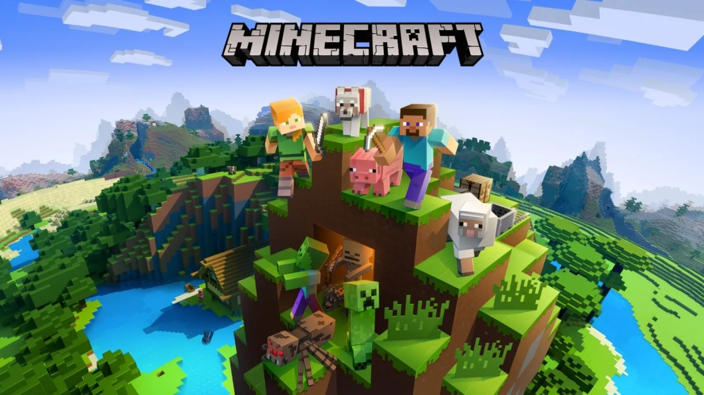

El desarrollo de Minecraft
Minecraft fue creado por Mojang en 2009 y es una obra de Markus “Notch” Persson. Está fuertemente inspirado en juegos como Dwarf Fortress, Dungeon Keeper e Infiniminer, pero lleva el juego de forma libre y sandbox que se ve en esos títulos a nuevas alturas. Fue el primer juego oficial de la compañía y se ha convertido en el juego más vendido de todos los tiempos, con más de 180 millones de copias vendidas hasta la fecha.
Finalmente, Microsoft compró Mojang y Minecraft de Persson por $ 2.5 mil millones de dólares y Persson se alejó de su desarrollo. Minecraft ahora cuenta con cuatro modos: Hardcore, Creative, Adventure y Spectator, que permiten a los jugadores satisfacer la experiencia de juego a su gusto. También se puede jugar en línea con amigos, y hay miles de modificaciones disponibles para descargar que introducen contenido nuevo en su mundo ya bullicioso.

La minería y la creación son la base de Minecraft
Es bastante evidente, pero el mundo de Minecraft gira en torno a las tareas simples de extraer recursos y crear nuevos objetos. Y, con toda honestidad, esto representa la mayor parte del desempeño del juego. Caminarás hacia el desierto, cortarás árboles para recolectar un poco de madera que luego convertirás en un hacha y lentamente construirás un inventario de armaduras, armas, muebles, herramientas y minerales preciosos. En el camino, también construirás algunos refugios que serán tu hogar y en los que podrás almacenar tus pertenencias cuando descanses de la aventura.
El ciclo de explorar, construir y repetir el juego es infinitamente adictivo y solo está limitado por tu imaginación. Incluso si no eres un tipo creativo, hay mucha diversión en aventuras peligrosas en Nether: un mundo infernal lleno de tesoros increíbles y monstruos peligrosos.
Puedes, también, disfrutar de algunos mundos prefabricados creados por otros jugadores y realizar una misión guiada, disfrutar de minijuegos o jugar una ronda de policías y ladrones. Si tu imaginación necesita algo de inspiración, siempre hay un nuevo mod o creación de jugador para ayudar a despertar tu creatividad.
Complejidad en su sencillez
Minecraft presenta un mundo generado por procedimientos, lo que significa que nunca encontrarás lo mismo dos veces. Además, incluye casi 400 artículos únicos, lo que brinda a los jugadores mucho por descubrir y desbloquear. Una de las adiciones más ingeniosas a Minecraft fue Redstone, que es esencialmente la versión de Minecraft de la electricidad. Este componente les ha dado a los jugadores la capacidad de creariPhone 6 operativo.
Este potencial para la creatividad es lo que diferencia a Minecraft de muchos otros juegos en el mercado. No solo le ofrece libertad ilimitada, sino que cuenta con herramientas poderosas para crear casi cualquier cosa que puedas imaginar. Si bien la base gira en torno a las tareas básicas de minería y artesanía, no hay un límite sobre dónde pueda llevarte.

Juega como quieras
Si te sientes abrumado con todo el potencial, no te preocupes: Minecraft todavía tiene mucho que ofrecer sin volverse loco. De hecho, puedes renunciar por completo a creaciones elaboradas y solo concentrarte en explorar el mundo y construir un arsenal de armas poderosas para ayudarte en tus viajes. El juego te recompensa por jugar como quieras y nunca te hace sentir como si estuvieras jugando de la manera incorrecta. Los jugadores que no quieran crear construcciones o artilugios elaborados pueden disfrutar de la caza de diamantes, explorar grandes sistemas de cuevas, crear una granja, criar ganado y construir una casa sencilla.
Disponible en una amplia gama de dispositivos
Minecraft está disponible en dos ediciones: Minecraft Edición Java y Minecraft Edición Bedrock. La edición Java solo se puede reproducir en PC, mientras que la edición Bedrock admite el juego cruzado entre Android, iOS, consolas y usuarios de PC que ejecutan el cliente Bedrock. Con tantos dispositivos compatibles, es fácil ver por qué millones de jugadores lo han intentado. Además, la impresionante capacidad de juego cruzado hace que sea fácil jugar con amigos que poseen el juego en un sistema diferente, una característica de la que a menudo carecen otros títulos exitosos.
Minecraft podría describirse como un juego de acción y aventura, o incluso un juego de supervivencia de sandbox. Pero las posibilidades que ofrece son enormes y las aventuras casi infinitas. Si el mundo que has creado comienza a ser aburrido, siempre puedes sumergirte en las modificaciones, donde se agrega nuevo contenido a diario. La comunidad de modding es una de las más grandes en la industria del juego, y seguramente encontrarás algo que te mantendrá entretenido durante días. Si tienes curiosidad de qué se trata todo esto o cómo Minecraft ha seguido siendo popular durante más de diez años: hazte un favor y pruébalo. Te sorprenderá lo divertido que puede ser el mundo de bloques.